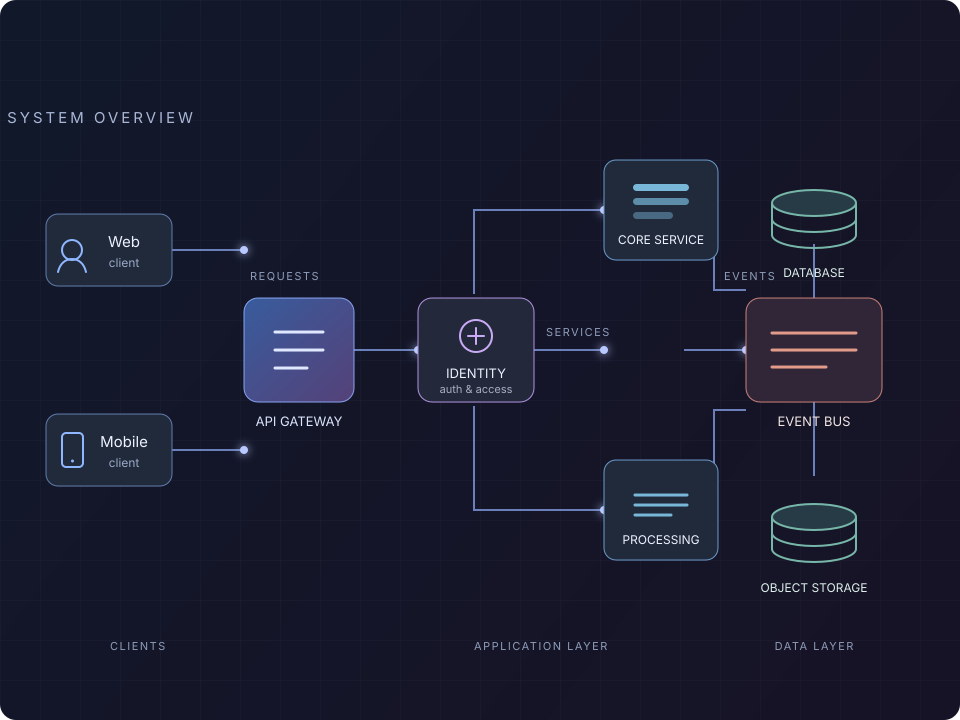

A personal experiment in AI-assisted web design
01 / Software architecture
Building the
digital backbone.
I'm Alexandru Ovedenie, an experienced software developer in Bucharest. My expertise spans backend engineering, software architecture design, and dependable platform development. I build secure services that connect APIs, distributed processing, and data systems—and explore how AI can make creating software more imaginative.

02 / Banking platforms
Engineering
for trust.
Since 2023, I've been a software developer at ING Romania, building secure .NET microservices and APIs for everyday banking. My work spans containerized deployments, event-driven data processing, relational and in-memory databases, object storage, identity verification, and image processing—with a focus on protecting customer data and keeping services dependable.
03 / Platform development & exchange services
Platforms &
exchange services.
At HARMAN International (2019–2023), I created internal platforms, REST services, and automation, then built and maintained deployments across Windows and Linux.

04 / Early career
Software &
firmware.
I studied electronics, telecommunications, and information technology at the University Politehnica of Bucharest. I joined Infineon Technologies as an Application System Engineer through a summer internship and continued working there alongside my studies, contributing to software and firmware development.